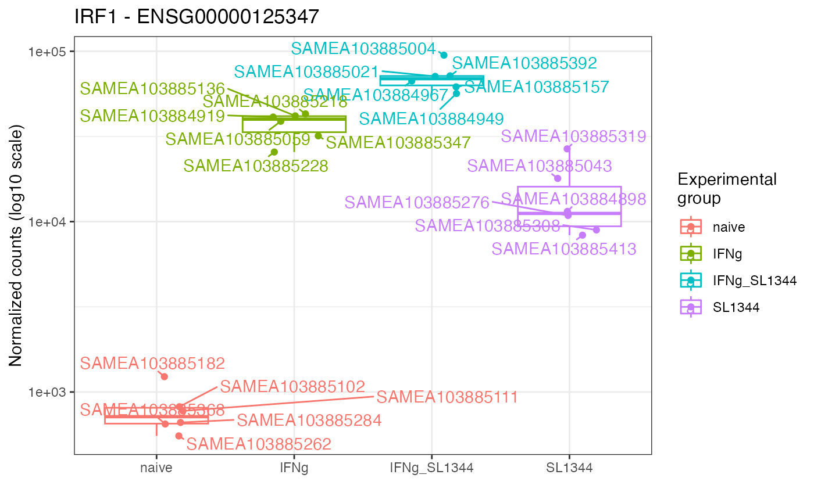

Plot expression values (e.g. normalized counts) for a gene of interest, grouped by experimental group(s) of interest
Usage
gene_plot(
de_container,
gene,
intgroup = NULL,
assay = "counts",
annotation_obj = NULL,
normalized = TRUE,
transform = TRUE,
labels_display = TRUE,
labels_repel = TRUE,
plot_type = "auto",
return_data = FALSE
)Arguments
- de_container
An object containing the data for a Differential Expression workflow (e.g.
DESeq2,edgeRorlimma). Currently, this can be aDESeqDataSetobject, normally obtained after running your data through theDESeq2framework.- gene
Character, specifies the identifier of the feature (gene) to be plotted
- intgroup
A character vector of names in
colData(de_container)to use for grouping. Note: the vector components should be categorical variables. Defaults to NULL, which which would then select the first column of thecolDataslot.- assay
Character, specifies with assay of the
de_containerobject to use for reading out the expression values. Defaults to "counts".- annotation_obj
A
data.frameobject with the feature annotation information, with at least two columns,gene_idandgene_name.- normalized
Logical value, whether the expression values should be normalized by their size factor. Defaults to TRUE, applies when
assayis "counts"- transform
Logical value, corresponding whether to have log scale y-axis or not. Defaults to TRUE.
- labels_display
Logical value. Whether to display the labels of samples, defaults to TRUE.
- labels_repel
Logical value. Whether to use
ggrepel's functions to place labels; defaults to TRUE- plot_type
Character, one of "auto", "jitteronly", "boxplot", "violin", or "sina". Defines the type of
geom_to be used for plotting. Defaults toauto, which in turn chooses one of the layers according to the number of samples in the smallest group defined viaintgroup- return_data
Logical, whether the function should just return the data.frame of expression values and covariates for custom plotting. Defaults to FALSE.
Details
The result of this function can be fed directly to plotly::ggplotly()
for interactive visualization, instead of the static ggplot viz.
Examples
library("macrophage")
library("DESeq2")
library("org.Hs.eg.db")
# dds object
data(gse, package = "macrophage")
dds_macrophage <- DESeqDataSet(gse, design = ~ line + condition)
#> using counts and average transcript lengths from tximeta
rownames(dds_macrophage) <- substr(rownames(dds_macrophage), 1, 15)
keep <- rowSums(counts(dds_macrophage) >= 10) >= 6
dds_macrophage <- dds_macrophage[keep, ]
# dds_macrophage <- DESeq(dds_macrophage)
# annotation object
anno_df <- data.frame(
gene_id = rownames(dds_macrophage),
gene_name = mapIds(org.Hs.eg.db,
keys = rownames(dds_macrophage),
column = "SYMBOL",
keytype = "ENSEMBL"
),
stringsAsFactors = FALSE,
row.names = rownames(dds_macrophage)
)
#> 'select()' returned 1:many mapping between keys and columns
gene_plot(
de_container = dds_macrophage,
gene = "ENSG00000125347",
intgroup = "condition",
annotation_obj = anno_df
)
#> using 'avgTxLength' from assays(dds), correcting for library size
